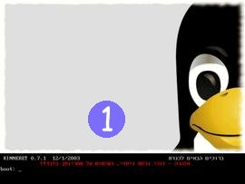
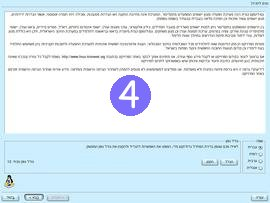

מדריך הפעלה והגדרת תצורה ראשונית
|
מאת דוביקס, יולי 2003 - ינואר 2004
כל הזכויות שמורות (c) לפרוייקט גנו/לינוקס כנרת 
הרשות נתונה בזאת להעתיק, להפיץ ו/או לשנות את המסמך הזה, תחת תנאי רשיון ה GNU לשימוש חופשי במסמכים, גרסה 1.2 או כל גרסה מאוחרת יותר שתפורסם ע"י קרן התוכנה החופשית. |
1. מבוא
גנו/לינוקס כנרת היא מערכת הפעלה שלמה הכוללת גם מגוון עשיר של יישומים. היות וכך, אין אפשרות להריץ את גנו/לינוקס כנרת כיישום מתוך מערכת הפעלה אחרת. מדריך זה יסביר לך כיצד להפעיל את גנו/לינוקס כנרת וינחה אותך בשלבי הגדרת התצורה הראשונית.
מדריך זה ילווה אותך לאורך השלבים הבאים:
- {מהי גנו/לינוקס כנרת?}
- איך משיגים תקליטור של כנרת?
- איתחול המערכת מתקליטור
- הכנת תקליטון {הפעלה}
- {הפעלה מכונן קשיח}
- אשף הגדרת התצורה הראשונית
- מה הלאה?
2. {מהי גנו/לינוקס כנרת?}
{גנו/לינוקס כנרת הינה מערכת הפעלה ומגוון יישומים המסופקים בערכה אחת ונוחה להפעלה ולשימוש (תקליטור). המערכת אינה מחייבת התקנה ו/או הגדרות מסובכות, ומכילה זיהוי חומרה אוטומטי, אשף התחברות קלה לאינטרנט ומגוון יישומים עשיר ואיכותי וכן תמיכה במגוון שפות.}
{בין היישומים המסופקים בתקליטור ניתן למנות יישומים משרדיים (מעבד תמלילים, גיליון אלקטרוני, עורך מצגות ועוד), יישומי אינטרנט (דפדפן, דוא"ל, מסרים מיידיים, צ'אט ועוד), יישומי מולטימדיה (נגינת שירים, צפיה בסרטים, עריכת תמונות ועוד) וכן מגוון משחקים. גנו/לינוקס כנרת מיועדת בראש ובראשונה לתלמידים במערכת החינוך הישראלית, ולכן היא כוללת מגוון לומדות, עזרי לימוד וסביבות פיתוח הנדרשות במהלך שנות הלימוד.}
{המערכת ניתנת להורדה חופשית (ובחינם) מהאינטרנט. מטרות הפרוייקט הן מתן הזדמנות שווה לתלמידים מכל האוכלוסיה בחינוך הטכנולוגי, הצגת אלטרנטיבה חופשית ואיכותית למערכת ההפעלה ולתוכנות הקנייניות בהן משתמש התלמיד בעת לימודיו וכן קידום תנועות התוכנה החופשית והקוד הפתוח בישראל.}
3. איך משיגים תקליטור של כנרת?
גנו/לינוקס כנרת היא מערכת הפעלה שלמה הכוללת גם מגוון עשיר של יישומים. היות וכך, אין אפשרות להריץ את גנו/לינוקס כנרת כיישום מתוך מערכת הפעלה אחרת. כדי להפעיל את גנו/לינוקס כנרת עליך להשיג או להכין תקליטור של כנרת. פרק זה יציג לפניך את האפשרויות השונות העומדות בפניך.
הורדה מהרשת
גנו/לינוקס כנרת היא תוכנה חופשית. {אנו מזמינים אותך להוריד עותק לצריבה חינם מאתר הבית שלנו שכתובתו http:/www.linux-kinneret.org. לרשותך עומדים מספר אתרי הורדה המכילים עותקים זהים של המערכת, על מנת לאפשר לך להוריד מאתר חלופי במקרה של עומס/ גודל הקובץ לצריבה הוא כ 650 מגהבייט}. לצורך ההורדה נדרש קו אינטרנט מהיר (כבלים או ADSL). משך ההורדה הוא כשעתיים וחצי בקו 750 מגהביט. הקובץ שיש להוריד הינו עם סיומת iso.
{מומלץ להשתמש במנהל הורדות על מנת לאפשר המשך ההורדה מהנקודה בה היא נפסקה. אפשרות זו נתמכת רק בחלק משרתי ההורדה.
ניתן להוריד תוכנת קוד פתוח מתאימה למערכת ההפעלה חלונות מהאתר http:/francis.dupont.free.fr/downloadplus/. באתר זה גם מופיעות הוראות שימוש בתוכנה.
יש באפשרותך לבדוק את הקובץ שהורדת על מנת לוודא שלא חלו תקלות בזמן ההורדה ושהקובץ תקין. לצורך זה, יש להפעיל על הקובץ תוכנה מיוחדת שתחשב עבור קובץ זה קוד זיהוי ייחודי. את הקוד הזה יש להשוות לקוד המופיע בקובץ עם סיומת md5sum הזמין להורדה מאתר ההורדה. ניתן להוריד {תוכנת קוד פתוח} מתאימה לחלונות לצורך חישוב ובדיקת קוד הזיהוי מאתר {http:/www.md5summer.org/about.html}. באתר זה גם מופיעות הוראות שימוש בתוכנה.
לאחר הורדת קובץ ה iso ובדיקתו, יש לצרוב אותו לתקליטור. יש להקפיד לצרוב אותו כ image ולא כקובץ רגיל. אם ברשותך תוכנת הצריבה nero הנפוצה, יש באפשרותך להיעזר בהוראות הצריבה להלן.
צריבת התקליטור
הקובץ שהורדת אינו קובץ רגיל אלא תעתיק מדוייק של תכולת התקליטור של גנו/לינוקס כנרת. ניתן להתייחס לתעתיק זה כאל צילום מדוייק של התקליטור, אותו עליך להטביע על תקליטור לצריבה. בדרך כלל, פעולה זו תיקרא צריבה של image file ולא צריבה רגילה. אין אפשרות להשתמש בתקליטור שכבר צרבת עליו אלא יש להשתמש בתקליטור חדש וריק. {}
{לתשומת לבך, אין אנו אחראים לאיכות הצריבה ו/או לאיכות התקליטור עליו מבוצעת הצריבה ו/או לנכונות הפרטים המובאים להלן. המידע מבוסס על הוראות הזמינות ברשת ואין באפשרותנו לאמת מידע זה. המידע מובא לידיעה בלבד וכשרות לציבור. מאחר ויש בשוק מספר תוכנות צריבה בגרסאות שונות, מומלץ לך להיעזר בהוראות שצורפו לתוכנת הצריבה שלך.}
{צריבת התקליטור בעזרת Nero - Burning Rom}
ההוראות המובאות להלן מתייחסות לתוכנת Nero - Burning Rom בגרסה 5. ההוראות מדגישות שלבים חשובים בתהליך הצריבה ואינן מתיימרות להחליף את המדריך המצורף לתוכנה שרכשת (או קיבלת ביחד עם הצורב).
- {יש להפעיל את התוכנה. במידה ונפתח אשף הצריבה, יש לסגור אותו.}
- מתפריט File יש לבחור באפשרות Burn Image
- יפתח חלון לבחירת הקובץ לצריבה. עליך לסמן בתיבת Files of type את האפשרות 'כל הקבצים' או באנגלית 'all files' ולאתר את קובץ ה iso שהורדת מהאינטרנט. לאחר בחירת הקובץ יש ללחוץ על Open.
- יש להמשיך לפעול לפי הוראות התוכנה. מומלץ שלא לשנות את ברירות המחדל למעט בחירת האופציה test and burn במסך פרמטרי הצריבה וכן הגדרת מהירות הצורב וסוגו.
- עם סיום האשף יופיע חלון הצריבה. משך הצריבה תלוי במהירות הצורב שלך ומאפיני הצריבה. בסיום הצריבה ניתן לעבור לפרק הבא.
{צריבת התקליטור בעזרת Easy CD Creator}
{ההוראות המובאות להלן מתייחסות לתוכנת Easy CD Creator. ההוראות מדגישות שלבים חשובים בתהליך הצריבה ואינן מתיימרות להחליף את המדריך המצורף לתוכנה שרכשת (או קיבלת ביחד עם הצורב).}
- {יש להפעיל את התוכנה.}
- {מתפריט File יש לבחור באפשרות Create CD from disk image}
- {בחלון CD Creation Setup יש ללחוץ על הכפתור Advanced ולוודא שנבחרה האפשרות Disk at Once.}
- {בחלון בחירת הקובץ לצריבה יש לסמן בתיבת Files of type את האפשרות 'ISO image files', לאתר את קובץ ה iso שהורדת מהאינטרנט, ולבחור אותו בלחיצה כפולה עם העכבר.}
- {יש לבחור באפשרות Burn CD מתפריט File.}
- {משך הצריבה תלוי במהירות הצורב שלך ומאפיני הצריבה. בסיום הצריבה ניתן לעבור לפרק הבא.}
{צריבת התקליטור בעזרת WinOnCD}
{ההוראות המובאות להלן מתייחסות לתוכנת WinOnCD. ההוראות מדגישות שלבים חשובים בתהליך הצריבה ואינן מתיימרות להחליף את המדריך המצורף לתוכנה שרכשת (או קיבלת ביחד עם הצורב).}
- {יש לשנות את סיומת הקובץ שהורדת מ 'iso' ל 'raw'.}
- {יש להפעיל את התוכנה.}
- {יש לבחור באפשרות Other ולאחר מכן Track Mirror.}
- {עליך להזין בשדה project name ערך כלשהו ולאחר מכן ללחוץ על OK.}
- {עליך להזין את הנתיב המדוייק לקובץ שיש לצרוב בחלון השמאלי העליון ואז לגרור את הקובץ מהחלון הימני העליון לחלון התחתון.}
- {יש לוודא שבשדה Properties - Dataformat מסומנת האפשרות 2048 Mode 1 ובשדה Properties - Trackformat מסומנת האפשרותCD-Rom Mode 1.}
- {לסיום יש לבחור CD (בחלון העליון) ואז ללחוץ על Burn.}
- {משך הצריבה תלוי במהירות הצורב שלך ומאפיני הצריבה. בסיום הצריבה ניתן לעבור לפרק הבא.}
רכישת תקליטור צרוב של גנו/לינוקס כנרת
רשימת המקומות בהן ניתן לרכוש עותק צרוב של גנו/לינוקס כנרת מובאת להלן כשירות לציבור. אין אנו אחראים להתקשרות העסקית בינך לבין הספק, ובכלל זה לאיכות השירות, איכות המוצר, אספקת המוצר וכדומה. מומלץ לוודא את רכישת הגרסה האחרונה בהתאם למופיע באתר ההורדה כפי שצויין לעיל. {לרשימת אתרי מסחר מקוונים עדכנית יש לעיין בדף ההורדה הזמין מאתר הבית שלנו.}
-
{אתר "מדריך הטרמפיסט למחשבים" שכתובתו http:/www.guides.co.il/php/buylinux.php}
-
{אתר "בי. די. מחשבים" שכתובתו http:/bdcomp.8m.com/services/buylinux.html}
4. איתחול המערכת מתקליטור
גנו/לינוקס כנרת היא מערכת הפעלה שלמה הכוללת גם מגוון עשיר של יישומים. היות וכך, אין אפשרות להריץ את גנו/לינוקס כנרת כיישום מתוך מערכת הפעלה אחרת. כדי להפעיל את גנו/לינוקס כנרת עליך לבצע איתחול של המערכת מתוך התקליטור. הפרק הבא יסביר לך איך לבצע איתחול מתוך תקליטון (דיסקט) במידה ואין למחשב שלך אפשרות לבצע איתחול מתקליטור.
יש להפעיל את המחשב כאשר התקליטור של גנו/לינוקס כנרת נמצא בכונן התקליטורים. במידה ומוצג מסך הפתיחה של כנרת, המחשב שלך מאפשר איתחול מתקליטור וניתן להמשיך לפרק אשף הגדרת התצורה הראשונית. באם במקום לאתחל את גנו/לינוקס כנרת, עלתה מערכת הפעלה אחרת, יש באפשרותך לבצע את אחד מהצעדים הבאים:
- להכין תקליטון איתחול כפי שמוסבר בפרק הכנת תקליטון איתחול
- {לאפשר הפעלה של גנו/לינוקס כנרת מהכונן הקשיח כפי שמוסבר בפרק הפעלה מכונן קשיח}
- לשנות את הגדרות האתחול של המחשב (מומלץ למשתמשים מתקדמים בלבד)
שינוי הגדרות האיתחול של המחשב
אזהרה! סעיף זה מיועד למשתמשים מתקדמים בלבד. אין אנו אחראים לשום נזק שעלול לקרות למחשבך מביצוע ההוראות בסעיף זה. באם מחשבך לא איפשר איתחול מתקליטור - מומלץ לבצע איתחול מתקליטון (דיסקט) {או להפעיל את המערכת מהכונן הקשיח} כפי שמוסבר {בפרקים הבאים}.
הגדרות האיתחול של המחשב מוגדרות ב-BIOS ונשמרות ברכיב זיכרון לא-מחיק. כדי להגיע למסך שינוי הגדרות אלו, יש ללחוץ על מקש כלשהו עם איתחול המחשב. המקש עליו יש ללחוץ שונה ממחשב אחד למשנהו, אך לרוב מדובר במקש F1 או DEL. בדרך כלל תופיע הודעה מתאימה בשלב איתחול המחשב שתציין מהו המקש עליו יש ללחוץ. לאחר לחיצה על מקש זה (כל עוד ההודעה המתאימה מופיעה על המסך), יופיע מסך ההגדרות של ה-BIOS.
לתשומת לבך! ישנם מחשבים ניידים מסויימים שבהם לא ניתן לבצע את ההגדרות המופיעות בתת-פרק זה, אולם הם מאפשרים לבחור את התקן האיתחול (boot device) ע"י לחיצה על מקש מתאים בשלב האיתחול של המחשב. באם מופיעה הודעה לגבי אפשרות זו, עליך ללחוץ על המקש המתאים ולבחור מהתפריט המתאים איתחול מתקליטור.לאחר הכניסה למסך הגדרות ה-BIOS, עליך לאתר את האפשרות להגדרת סדר האיתחול (boot sequence) של המחשב בתפריט. ברירת המחדל היא לרוב A,C (המציינת ניסיון איתחול מתקליטון ולאחר מכן ניסיון איתחול מכונן קשיח). עליך לשנות הגדרה זו ל-A,CDROM,C (או אפשרות דומה) על מנת להנחות את המחשב לנסות איתחול מתקליטור באם לא הוכנס תקליטון איתחול, ולפני ניסיון איתחול מכונן קשיח.
לאחר שינוי ההגדרה, עליך לשמור את התצורה החדשה ולבצע איתחול מחדש של המחשב כאשר הפעם אמור להופיע מסך הפתיחה של גנו/לינוקס כנרת.
בחלק מהמחשבים היותר-חדישים, שינוי סדר ההפעלה ב BIOS לכשעצמו לא יאפשר איתחול מתקליטור. במחשבים אלו, יש גם ללחוץ על מקש מסוים - למשל C, תלוי בלוח האם - בזמן העליה. מופיעה על כך הודעה בעת תחילת העליה, אך היא "מהבהבת", וקיימת רק לזמן קצר. באם שינית את ההגדרותך כפי שהוסבר לעיל ועדיין לא מבוצע איתחול מהתקליטור, יש להקפיד לקרוא את ההודעות המופיעות על המסך מייד עם הפעלת המחשב ו/או להיוועץ במדריך המסופק עם המחשב ולפעול לפי ההוראות.
5. הכנת תקליטון {הפעלה}
פרק זה נועד לעזור לך להכין תקליטון {הפעלה} שיאפשר לך להריץ את כנרת. באם כבר הצלחת להפעיל את כנרת מתקליטור, עליך להמשיך לפרק{} אשף הגדרת התצורה הראשונית. {ישנה אפשרות נוספת להפעלת גנו/לינוקס כנרת מהכונן הקשיח. אפשרות זו מוסברת בפרק 'הפעלה מכונן קשיח'.}
הכנת תקליטון האיתחול מתבצעת מתוך מערכת ההפעלה "חלונות". עלייך להכניס את התקליטור של גנו/לינוקס כנרת לכונן התקליטורים, וברוב המקרים אשף הכנת תקליטון האיתחול יופעל אוטומטית והמסך הבא יופיע:

באם לא מוגדר למערכת ההפעלה "חלונות" שלך להפעיל את התוכנה מהתקליטור באופן אוטומטי, עליך להריץ את היישומון באופן ידני. כדי לבצע זאת, עליך להיכנס לסייר הקבצים ולהריץ את התוכנית kinneret.exe הנמצא בתקליטור תחת ספריית boot כמתואר בצילום המסך הבא:

עם הרצת היישומון והופעת מסך הפתיחה, עליך ללחוץ על הכפתור הכנת תקליטון הפעלה, והחלון הבא יופיע:

עליך להכניס תקליטון מפורמט לכונן המתאים (רצוי תקליטון חדש שאין עליו מידע שעלול ללכת לאיבוד) וללחוץ על הכפתור התחל. היישומון יעתיק לתקליטון את הקבצים הנדרשים לאיתחול גנו/לינוקס כנרת ולאחר סיום פעולתו, עליך ללחוץ על הכפתור איתחול המחשב מהחלון הראשי של היישומון. יופיע חלון אישור, ולאחר לחיצה על כפתור המשך יבוצע איתחול של המחשב.
לתשומת לבך! איתחול המחשב עלול לגרום לאובדן מידע שלא נשמר בכונן הקשיח בכל היישומים הפועלים בזמן האיתחול. לפיכך מומלץ לבצע שמירה של המידע בכל היישומים הפועלים ולסיים את פעולת יישומים אלו לפני איתחול המחשב.
6. {הפעלה מכונן קשיח}
{פרק זה נועד לעזור לך להפעיל את גנו/לינוקס כנרת מהכונן הקשיח. מומלץ להשתמש באפשרות זו רק לאחר שכבר הפעלת את גנו/לינוקס כנרת מהתקליטור ו/או בעזרת תקליטון הפעלה, וברצונך להפעיל את המערכת בעתיד ישירות מהכונן הקשיח.}
{הפעלה מכונן קשיח מעתיקה את המערכת לדיסק קשיח ומאפשרת את הפעלתה משם. שיטת עבודה זו משפרת את מהירות ותגובתיות המערכת, וכן מפנה את כונן התקליטורים לשימושים אחרים (כגון האזנה לתקליטורי שמע). לידיעתך, שיטת עבודה זו מבוססת על הפעלת המערכת מתעתיק מדוייק של תכולת התקליטור של גנו/לינוקס כנרת שיימצא בכונן הקשיח. ניתן להתייחס לתעתיק זה כאל צילום מדוייק של התקליטור, ולכן לא תתאפשר התקנה של תוכנות נוספות. מאידך, שיטת עבודה זו בטוחה יחסית ואינה דורשת "חלוקה למחיצות".
{הכנת תקליטון האיתחול מתבצעת מתוך מערכת ההפעלה "חלונות". עלייך להכניס את התקליטור של גנו/לינוקס כנרת לכונן התקליטורים, וברוב המקרים אשף הכנת תקליטון האיתחול יופעל אוטומטית והמסך הבא יופיע:}
{באם לא מוגדר למערכת ההפעלה "חלונות" שלך להפעיל את התוכנה מהתקליטור באופן אוטומטי, עליך להריץ את היישומון באופן ידני. כדי לבצע זאת, עליך להיכנס לסייר הקבצים ולהריץ את התוכנית kinneret.exe הנמצא בתקליטור תחת ספריית boot כמתואר בצילום המסך הבא:}
{עם הרצת היישומון והופעת מסך הפתיחה, עליך ללחוץ על הכפתור הפעלה מכונן קשיח, וחלון ההסברים הבא יופיע:}
{לחיצה על כפתור כן לאישור תציג את הודעת האזהרה הבאה :}

{המסך הבא שיוצג תלוי בגרסת מערכת ההפעלה חלונות המותקנת במחשבך (הסיבה לכך היא מנגנוני האתחול השונים שנתמכים בכל אחת מהגרסאות.}
{מסך אפשרויות ההפעלה בחלונות 98 מאפשר לך להפעיל את גנו/לינוקס כנרת בעזרת קיצור דרך על שולחן העבודה ו/או תפריט האיתחול של המערכת (המסך המוצג בעת הפעלת המחשב). האפשרות השניה אינה מחייבת הפעלה מוקדמת של חלונות אולם היא מחייבת את שינוי תפריט ההפעלה של המערכת (שיבוצע באופן אוטומטי ע"י האשף):}
{מסך אפשרויות ההפעלה בחלונות 2000 או XP (ב-XP זה נראה קצת יותר יפה, אבל אפשרויות ההפעלה דומות) מאפשר לך להפעיל את גנו/לינוקס כנרת בעזרת תפריט האיתחול של המערכת (המסך המוצג בעת הפעלת המחשב). אפשרות זו מחייבת את שינוי תפריט ההפעלה של המערכת (שיבוצע באופן אוטומטי ע"י האשף):}

{בחלונות ME אין תמיכה מובנית באף אחת מאפשרויות ההפעלה שקיימות לגרסאות אחרות של חלונות, ולפיכך תופיע ההודעה הבאה:}
{לתשומת לבך, חלון האפשרויות שיוצג עבור מערכת הפעלה מסדרת WIndows ME אינו חוסם את האפשרות לעדכון תפריט האתחול, ולפיכך חובה עליך לבחור ביטול ממסך האפשרויות הבא:}

{כל מסכי האפשרויות שהוצגו לעיל מאפשרים לך לבחור את הכונן שאליו יועתקו קבצי גנו/לינוקס כנרת. אפשרות זו שימושית באם במחשבך יש יותר מכונן אחד. לאחר בחירת הכונן (או עבור כונן ברירת המחדל) יוצג המקום הפנוי שיוותר בכונן לאחר ההתקנה. מומלץ לוודא שבכונן ישארו לפחות 500MB פנויים באם זהו הכונן שעליו מותקנת מערכת ההפעלה חלונות. באם לא בחרת בכונן כלשהו, כפתור "התחל התקנה" יופיע באפור ולא יתאפשר לך ללחוץ עליו. לתשומת לבך, לצורך הפעלה מכונן קשיח יועתקו מספר קבצים חיוניים לספריה c:\boot בכונן C גם אם בחרת בכונן אחר לצורך ההתקנה. הקבצים שיועתקו יתפסו עד 1.5MB מהשטח הפנוי בכונן C.}
{לאחר בחירת אפשרויות ההתקנה עליך ללחוץ על "התחל התקנה". בשלב הבא יועתקו הקבצים הנדרשים מהתקליטור לכונן(ים) הקשיח(ים):}
{במקרה וחלה שגיאה במהלך ההתקנה, תופיע הודעת שגיאה. במידה וקיבלת הודעת שגיאה, אנו ממליצים לרשום את הודעת השגיאה על דף ולדווח עליה בפורומי התמיכה של גנו/לינוקס כנרת המקושרים מדף הבית שלנו. שגיאות נפוצות הן תקלה בזמן העתקת הקבצים לכונן הקשיח או זיהוי של תפריט איתחול לא תקין שלא ניתן למחוק אותו. במקרה שההתקנה מזהה תפריט איתחול ישן, אז תופיע שאלה האם למחוק או לשכתב את התפריט הישן.}
{חשוב לציין שאם ורק אם מתקינים תפריט איתחול, התוכנית משנה קבצי מערכת. תוכנית ההתקנה שומרת גיבויים של הקבצים ששינתה בספריית c:\boot. קבצים אלו הם: c:\config.sys ו-c:\autoexec.bat בחלונות 95 או 98, ו - c:\boot.ini בחלונות XP או 2000.}
{אם ההתקנה הושלמה בהצלחה תופיע ההודעה הזאת :}
{ולאחר מכן חלון ה- "ברוכים הבאים" ישתנה ויראה כך :}
{עליך ללחוץ על הכפתור איתחול המחשב מהחלון הראשי של היישומון. יופיע חלון אישור, ולאחר לחיצה על כפתור המשך יבוצע איתחול של המחשב. לתשומת לבך! איתחול המחשב עלול לגרום לאובדן מידע שלא נשמר בכונן הקשיח בכל היישומים הפועלים בזמן האיתחול. לפיכך מומלץ לבצע שמירה של המידע בכל היישומים הפועלים ולסיים את פעולת יישומים אלו לפני איתחול המחשב.}
7. אשף הגדרת התצורה הראשונית
איתחול המערכת
עם איתחול פעולת גנו/לינוקס כנרת יתבצעו השלבים הבאים:
- יופיע מסך ההפעלה של גנו/לינוקס כנרת (splash screen). מסך זה יוצג למשך שניות בודדות והוא מאפשר הגדרת פרמטרי איתחול שונים במידה ונתקלת בבעיות בהפעלה רגילה של המערכת. הגדרות אלו מיועדות למשתמשים מתקדמים ואינן מוסברות במדריך זה, אולם ניתן לקבל מסך עזרה על-ידי לחיצה על מקש F2 כל עוד מוצג מסך ההפעלה.
- על המסך יופיעו הודעות שונות של עליית המערכת וזיהוי אוטומטי של חומרת המחשב שברשותך.
- תמונת הרקע של שולחן העבודה של גנו/לינוקס כנרת תוצג על המסך.
- לאחר שניות מעטות ייטען אשף הגדרת התצורה הראשונית ויופיע מסך הפתיחה של אשף זה.
|  |  |
 |
 |
מסך הפתיחה
מסך הפתיחה מכיל מספר מילות הסבר על התקליטור, וכן מספר אפשרויות לבחירתך:
- אפשרות בחירת שפה - בחירה זו תגדיר את שפת התרגום של ממשק המשתמש של המערכת, כולל אשף ההגדרות ויישומים שונים המסופקים במסגרת גנו/לינוקס כנרת. לתשומת לבך, התרגום הינו חלקי ויוצג בשפה הנבחרת רק כאשר הוא זמין בתקליטור.
- שינוי גודל גופן - בחירה זו מאפשרת לך לשנות את גודל הגופן המשמש באשף ההגדרות על מנת להתאימו לגודל הנוח לך. לתשומת לבך, הגדרה זו אינה משפיעה על הגופן המשמש את שולחן העבודה של גנו/לינוקס כנרת. גופן זה ניתן לשינוי בשלב מאוחר יותר כמוסבר במדריך ההתאמה האישית.

לאחר קריאת מילות הפתיחה, עליך ללחוץ על הכפתור הבא על מנת להמשיך.
רישיון שימוש
במסך הבא יוצג רישיון השימוש במערכת גנו/לינוקס כנרת אותו עליך לקרוא בעיון ולהבין את הנאמר בו. על מנת לקרוא את הנספחים של הרישיון יש ללחוץ על הקישורים המתאימים המופיעים ברישיון.
לתשומת לבך! הפצת גנו/לינוקס כנרת מסופקת "כפי שהיא", בלא אחריות מסוג כלשהו, בין אם מפורשת ובין אם משתמעת, לרבות, אך מבלי למעט מהאמור, האחריות המשתמעת למסחריות והתאמה למטרה מסוימת. בעלי זכויות היוצרים ו/או מפיצי התוכנה לא ישאו כלפיך באחריות לנזקים, לרבות נזקים כלליים, מיוחדים, משניים או תוצאתיים כלשהם, הנובעים מהשימוש או מאי-היכולת להשתמש בתוכנות המסופקות. עליך לקרוא את רישיון השימוש ונספחיו בעיון לפני השימוש בהפצה זו.
לאחר שקראת, הבנת והסכמת לתנאי הרישיון, עליך לסמן X בתיבה המאשרת שקראת והבנת את תנאי רישיון השימוש, על ידי לחיצה עם סמן העכבר על תיבה זו. לתשומת לבך, הכפתור הבא לא יהיה מאופשר כל עוד לא אושר הרישיון. באם תנאי הרישיון אינם מקובלים עליך, יש באפשרותך לצאת מהמערכת על ידי לחיצה על הכפתור ביטול.
אופן ההפעלה של האשף
במסך הבא עליך לבחור את אופן ההפעלה של האשף:

- אוטומטית - זאת אפשרות ברירת המחדל והאפשרות המומלצת. באם ברצונך לבחור באפשרות זאת, כל מה שעלייך לעשות הוא ללחוץ על כפתור הבא בחלון זה.
- ללא הגדרות - אפשרות זאת תסיים את פעולת אשף ההגדרות באופן מיידי (ניתן להפעילה גם על ידי לחיצה על הכפתור ביטול המופיע בתחתית המסך. אפשרות זאת אינה שומרת הגדרות כלשהן על הכונן הקשיח, ומיועדת להדגמה בלבד. אנו ממליצים להימנע מאפשרות זאת מאחר והיא אינה מאפשרת שמירת הגדרות וכן עלולה להקטין את ביצועי המערכת בזמן ההדגמה.
- מומחה - אפשרות זאת מיועדת למשתמשי לינוקס מנוסים בלבד והיא מוסברת בנספח.
לאחר בחירת אופן הפעולה, עליך ללחוץ על הכפתור הבא על מנת להמשיך.
הגדרת המערכת
בשלב הבא תוגדר תצורת המערכת באופן אוטומטי ותופיע הודעה שתציג את ההגדרות השונות המבוצעות על-ידי האשף. שלב זה עלול לקחת דקות אחדות. עליך להמתין בסבלנות עד לסיום פעולתו.

סיום פעולת אשף ההגדרות
עם סיום שלב ביצוע ההגדרות יופיע מסך הסיום המודיע על השלמת פעולת האשף. יש ללחוץ על כפתור סיום בכדי לצאת מהאשף.
8. טעינת שולחן העבודה
עם סיום פעולת אשף ההגדרות יופיע מסך ההפעלה (splash screen) של שולחן העבודה.

9. מה הלאה?
עד כה למדת כיצד לאתחל את גנו/לינוקס כנרת והגדרת את התצורה הראשונית הנדרשת להפעלת המערכת.
מדריך השחייה הוא מרכז המידע האינטראקטיבי של גנו/לינוקס כנרת. מדריך זה כולל אוסף מאמרים שיאפשרו לך ללמוד על המערכת החדשה שלך ומגוון היישומים העשיר הכלול בה. מומלץ ביותר לקרוא את כל המאמרים בפרק לומדים לשחות בכנרת על מנת להפיק את המיטב מגנו/לינוקס כנרת. מדריכים מומלצים מסומנים בכוכבים בתפריט וביניהן מדריך התחברות לאינטרנט ומדריך התאמה אישית של סביבת העבודה.
צוות פרוייקט גנו/לינוקס כנרת מברך אותך על הפעלת התקליטור ומאחל לך הנאה ועבודה פוריה!
10. נספח: הפעלת האשף באופן "מומחה"
פרק זה מתאר את שלבי ההגדרות הידניים המתאפשרים באם נבחר אופן ההפעלה "מומחה" של אשף ההגדרות.
מחיצת עבודה
במסך זה עליך לבחור את המחיצה שבה יישמרו קבצי ההגדרות והמסמכים שלך. האשף מבצע סריקה של הכונן(ים) הקשיח(ים) ומציג את כל המחיצות הזמינות לשימוש, כתלות במבנה מערכת הקבצים שמוגדרת בהן. המחיצה בעלת המקום הפנוי הרב ביותר תיבחר באופן אוטומטי, אולם יש באפשרותך לבחור מחיצה אחרת אם רצונך בכך.

קבצי ההגדרות וקבצי מערכת אחרים יווצרו בספריה בשם kinneret בשורש מחיצת העבודה הנבחרת. אין באפשרותך לשנות הגדרה זו.
קובץ החלפה
במסך זה עליך לבחור את גודל קובץ ההחלפה שיווצר לשימוש המערכת. קובץ ההחלפה מאפשר טעינת והפעלת יישומים בזיכרון הגדול מהזיכרון הפיזי שמותקן בפועל במערכת. הנחיות לגבי בחירת גודל קובץ ההחלפה מוצגות במסך.
תיקיית הבית
מסך זה מאפשר לך לבחור ספריה שבה יישמרו מסמכיך האישיים.

ייבוא גופני True Type
השלב האחרון של הגדרות המומחה יאפשר לך לייבא גופנים ממחיצת חלונות. לתשומת לבך! לפני ייבוא גופנים ממחיצת חלונות עליך לוודא את תנאי הרישיון שתחתיו גופנים אלו מופצים ושאין מניעה חוקית בשימוש בגופנים אלו במערכת גנו/לינוקס כנרת. האחריות על ייבוא הגופנים ושימוש בהם ו/או חריגה מתנאי הרישוי שתחתיו הגופנים הופצו חל עליך בלבד.
הפצת גנו/לינוקס כנרת כוללת מגוון גופנים חופשיים בעברית ושפות נתמכות אחרות שיאפשרו לך להנות מהמערכת גם מבלי לייבא גופנים חיצוניים כלשהם. על מנת שלא לייבא גופנים כלשהם, עליך לסמן את הנתיבים לקבצי הגופנים המוצגים וללחוץ על הכפתור הסר. יש ללחוץ על כפתור הבא בכדי להגיע למסך הסיום של האשף.

במידה והאשף לא הצליח לאתר את המקום בו מאוחסנים גופני חלונות, תופיע הודעת שגיאה מתאימה. לאחר אישור יתאפשר לך להגדיר את ספריית הגופנים באופן ידני.

המשך פעולת האשף
עם סיום שלב ההגדרות הידניות תוגדר תצורת המערכת בדומה לאופן הפעולה האוטומטי, ולבסוף יופיע מסך הסיום המודיע על השלמת פעולת האשף. יש ללחוץ על כפתור סיום בכדי לצאת מהאשף ולהמשיך לשלב טעינת שולחן העבודה.
|
מסמך זה עובד ונערך עבור גנו/לינוקס כנרת, תוך שימוש בתוכנה חופשית בלבד. עמוד זה תואם לתקנים בינלאומיים המאפשרים צפיה בכל דפדפן תקני.
|
| לינוקס הוא שם רשום של Linus Torvalds; יוניקס הוא שם רשום של ה Open Group בארה"ב ובמדינות נוספות, Windows הוא שם רשום של Microsoft Corporation. כל שאר השמות הרשומים וזכויות היוצרים שייכים לבעליהם. |
חשוב לדעת! גנו/לינוקס כנרת מסופקת "כפי שהיא", בלא אחריות מסוג כלשהו, בין אם מפורשת ובין אם משתמעת, לרבות, אך מבלי למעט מהאמור, האחריות המשתמעת למסחריות והתאמה למטרה מסוימת. בעלי זכויות היוצרים ו/או מפיצי התוכנה לא ישאו כלפיך באחריות לנזקים, לרבות נזקים כלליים, מיוחדים, משניים או תוצאתיים כלשהם, הנובעים מהשימוש או מאי-היכולת להשתמש בתוכנות המסופקות. עליך .לקרוא בעיון את רישיון השימוש המלא ולהסכים לנאמר בו לפני השימוש בהפצה זו.

|